February 28, 2020
Review: 6 Functions of a GIS
- Capture
- Store
- Query
- Analyze
- Display
- Produce Output
Getting a Job in the Modern GIS Landscape
There is a dizzying array of programming language choices

Image credit: F. Hardisty / Penn State University
What languages are used in GIS?

Image credit: www.tiobe.com
Common programming languages used with GIS overview

Image credit: Penn State Dept. of Geography
Follow the GIS Programming Roadmap
GIS Programming with Python
GIS Programming?
Learn how to write scripts to perform GIS analyses and automate repetetive tasks with Python.
Programming vs Scripting Languages
Programming Language: Is compiled to machine code and run on the hardware of the underlying Operating System. Examples: C, C++, Java
Scripting Language: Is unstructured subset of programming language. It is generally interpreted. it basically "scripts" other things to do stuff. The primary focus isn't primarily building your own apps but getting an existing app to act the way you want Examples: JS, Python, R
Why Start with Python?
- Ease of use: scripting language, interpreted, high-level
- Open-source, object-oriented
- Modular, scalable, portable; comes with development tools
- On-the-fly testing (Interactive Window); rapid prototyping
- Easily ‘glues’ with other languages; installed with ArcGIS 10.x / ArcPro
- Large collaborative community (numeric and scientific extensions)
Writing Python Code
There are countless Interactive Development Environments (IDE) you can use to interpret your code. Everybody has their own preferences depending on the task as hand.

What about other resources for GIS programming?
Exercises
Data Analysis with Python (and R)

Data Analysis?
Learn how to use popular data analysis libraries in Python such as Numpy and Pandas.
OR... Learn how to perform data analysis using R and RStudio.
Building a (GIS) Data Science Pipeline

Doing Data Analysis in Python with the ArcGIS Python API

Doing Data Analysis in R

Check out the RStudio IDE
Exercises
Sign up for Data Camp
Check out all the different Python geospatial modules (scroll down)
Setup a local Jupyter Notebook session (follow along...)
Make your first plot with matplotlib
(Spatial) Databases
Review: What is a database?
- A database is an integrated set of data relating to a particular subject.
- A Database Management System (DBMS) is a software application designed to organize the storage and access of data.
- Databases form the basis of all GIS vector analysis.
Review: What is a database?
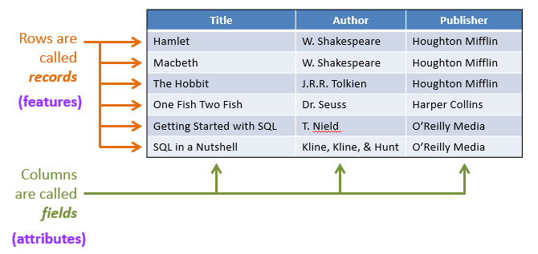Data are stored in tables
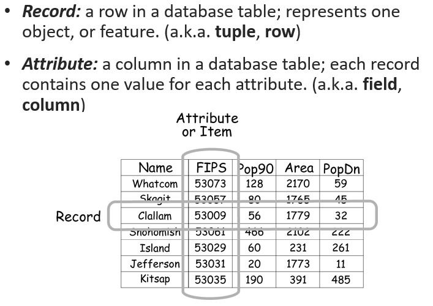Flat Database
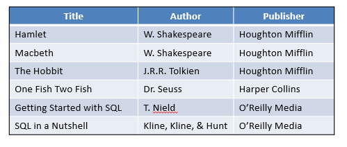- All information in one table.
- Potentially much duplication of values.
- e.g. an Excel spreadsheet.
Relational Database
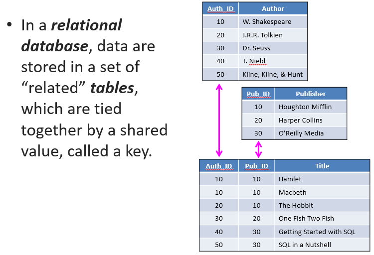Joining Tables in RDBMS
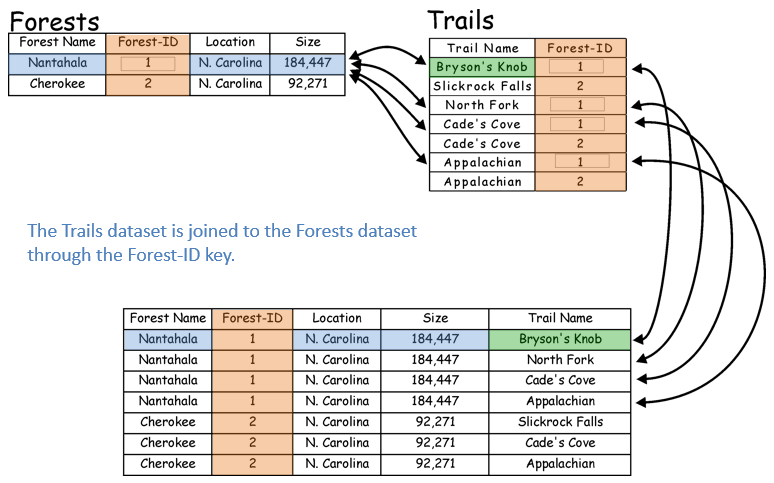What about spatial data?
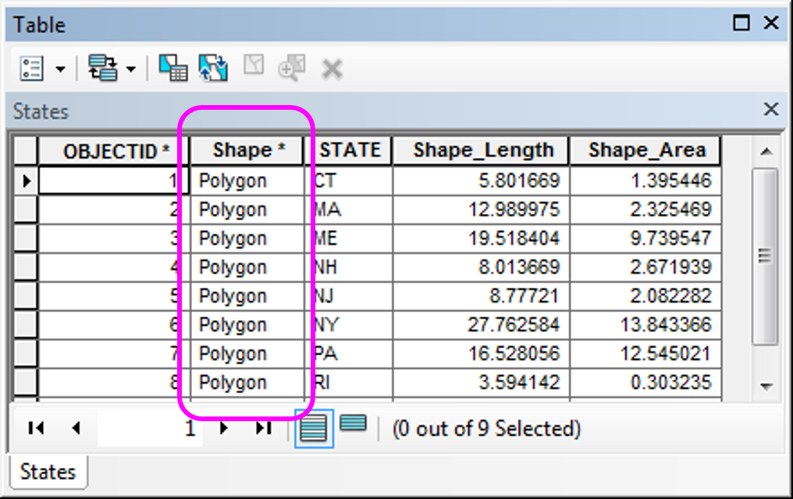PostgreSQL and PostGIS

What about spatial data?

An example scenario
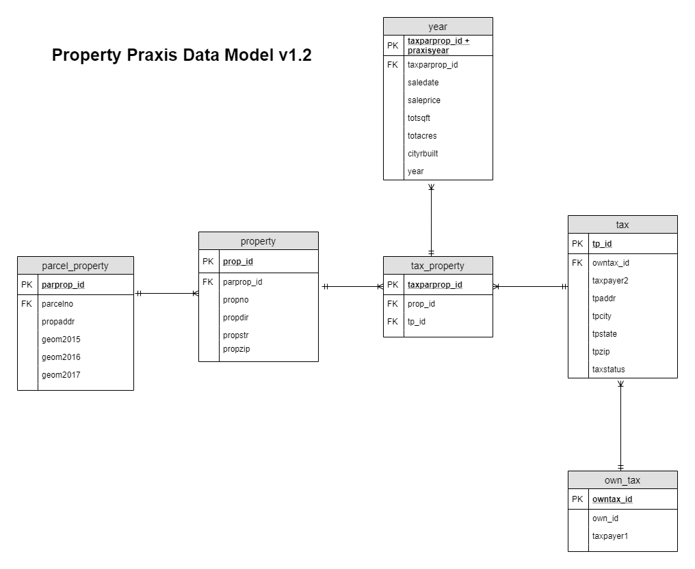Exercises
Sart learning SQL
Try SQLFiddle
Web Development / GIS
Learn the basics of web development. It's very important to do this before trying to jump into web GIS.

Image credit: 10 Best Design

What is Web GIS?
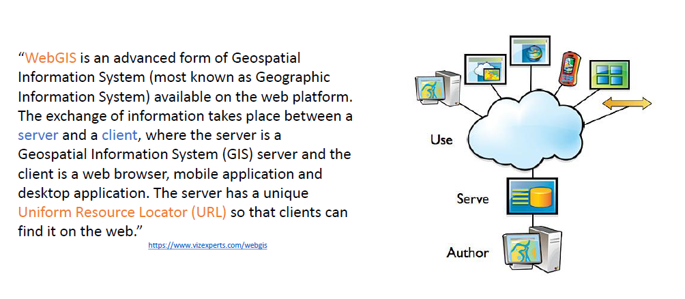Web GIS Architecture
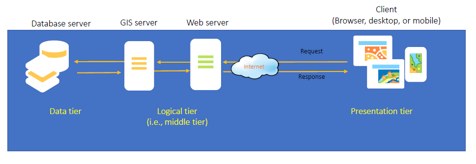Front End Dev

Back End Dev

Server Options
GeoJSON and TopoJSON
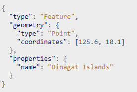
Putting It All Together

An Example
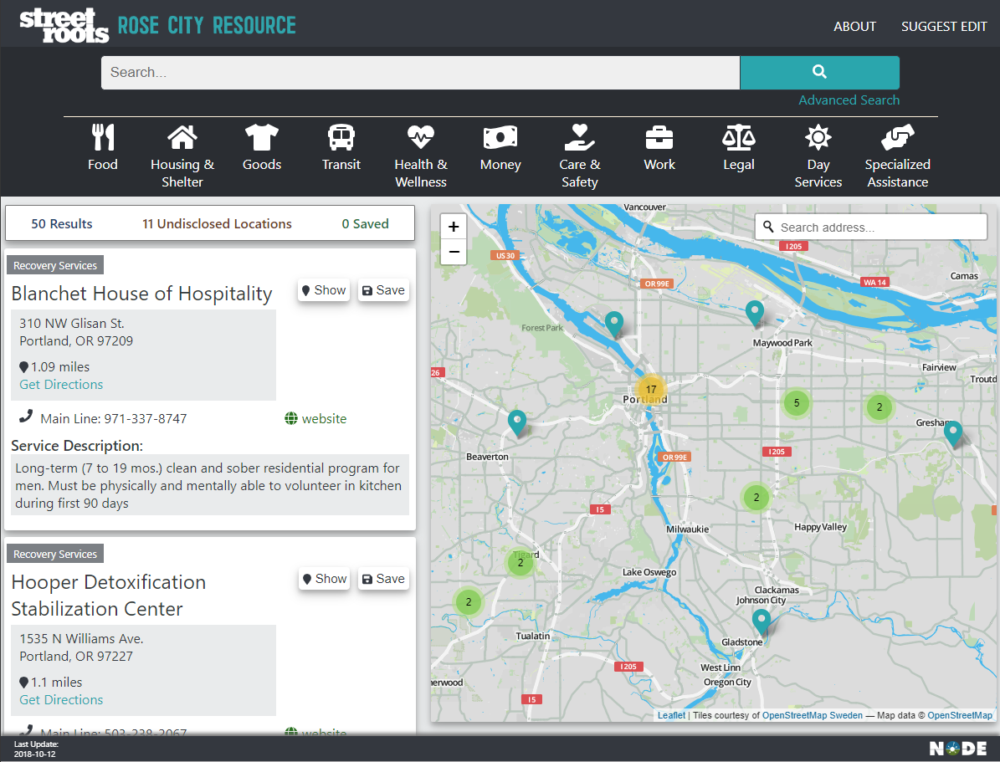Another Example
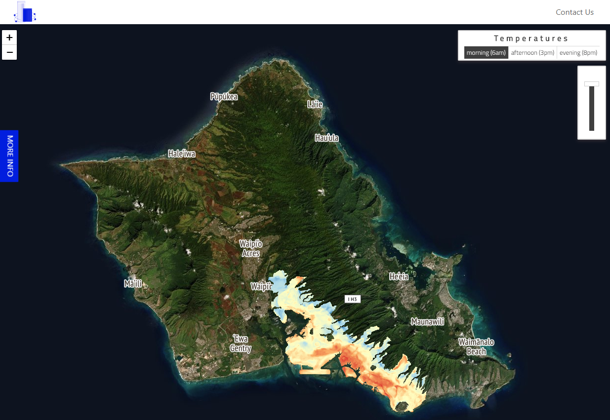Another Example
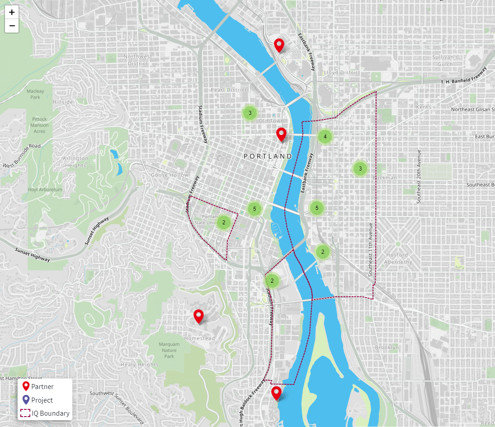Exercises
Start learning JS
Start learning CSS
Start learning HTML
Check out Leaflet.js
Thanks!
Email: timothy.hitchins@pcc.edu
Github: timhitchins